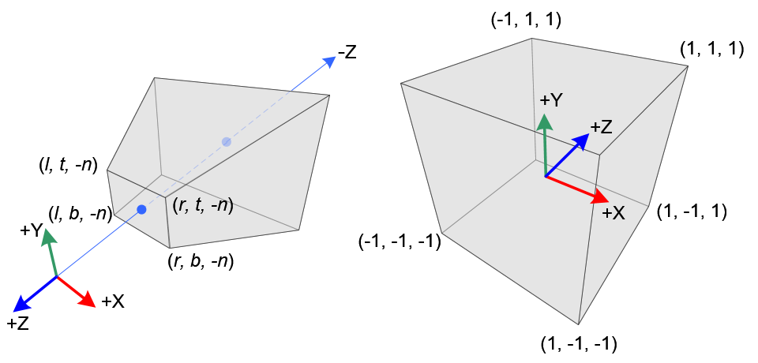

Model-View-Projection Matrices Derivation
Overview
This is a little dive into the so called model-view-projection matrix.
The fundamentals of rasterization is such a solved domain that this foundational first step of the pipeline really isn't much more than a side note most of the time. Accordingly, most resources, including popular (canonical) textbooks like Real Time Rendering do a rather poor job in explaining why and how this process happens, often even assuming it as a given and just baldly presenting you with an obscure looking expression.
If you're anything like me, you have some trouble using tools that you don't understand. Of course, we're not super interested in rolling our own mathematics library, if we don't have to, but being able to use the correct solution (using a tool like glm, glMatrix or something similar) and understanding it are not the same thing; there is indeed a deep difference between knowing something and understanding it
With each derivation and discussion I try to give some minimal examples that you can recreate, so you can ultimately convince yourself.
If you're using this to derive these matrices on your own, it would be helpful to have had some exposure to vector and matrix math.
There are a lot of resources to learn linear algebra, most of them are terrible. For a quick recap or to get some fast intuition video on matrix transformations. People also like this series. I can also recommend Sheldon Axler's "Linear Algebra Done Right"
Additionally, one of the authors of Real-Time Rendering, Tomas Möller, has a really polished, interactive (and free) linear algebra book you might find interesting. Check it out here
You should also know the basics of working with your graphics API of choice. I don't explain how to set up a rendering pipeline used to test our math and understanding (which you absolutely should do for your own benefit!) For the sake of writing these little online articles I'm using WebGL ( it's the only cross platform solution for producing computer graphics that I can easily share; (I can recommend WebGLFundamentals and Wayne Brown if you'd like to learn this particular API) For learning computer graphics in general, please see my collected graphics resources which I try to update as I come accross helpful sources.
Now, Let's try to "touch" what's going on and figure some of this stuff out.
Small Math Primer
A point in three dimensional space can be represented by a set of three numbers. We represent these points by a vector. Each vector can be thought of as a sum of unit vectors (it's one unit in length) pointed in different dimensions called basis vectors
\[ [3, 10, 5] = 3 [1, 0, 0] + 10 [0, 1, 0] + 5 [0, 0, 1] \]
If we were to transform these building block vectors, say stretch, shrink or flip them:
stretch: \[ 2 * 3[1, 0, 0] + \] shrink: \[ (1/2) * 10[0, 1, 0] + \] flip: \[ -1 (5[0, 0, 1] = [6, 5, -5] \]
The resultant vector is the same regardless whether we add them before or after the transformation.
This is the definition of a linear transformation:
\[ T ( u + v )= T ( u )+ T ( v ) \] \[ T ( cu )= cT ( u ) \]
Any linear transformation can be represented by a matrix.
A matrix is an encoding of the stretching, shrinking or flipping of the column basis vectors.
\[ \begin{bmatrix} 1 & 1 & 1 \\ 1 & 1 & 1 \\ 1 & 1 & 1 \\ \end{bmatrix}\begin{bmatrix} 3 \\ 10 \\ 5 \\ \end{bmatrix}=\begin{bmatrix} 3 \\ 10 \\ 5 \\ \end{bmatrix} \]
So,
\[ \begin{bmatrix} 2 & 0 & 0 \\ 0 & 1/2 & 0 \\ 0 & 0 & -1 \\ \end{bmatrix}\begin{bmatrix} 3 \\ 10 \\ 5 \\ \end{bmatrix}=\begin{bmatrix} 6 \\ 5 \\ -5 \\ \end{bmatrix} \]
The matrix is a transformation of the basis vectors, a transformation of the "vector space", i.e. the span of all possible points that the linear combination of the basis vectors can yield.
Scale and rotation is thus encapsulated in a matrix, but what about translation?
Well, not only can a matrix slice, it can dice too.
If we augment a matrix to have one more dimension than dimensions we need to manipulate, we can use that extra dimension to hold our translatation.
For a translation vector:
\[[T_x, T_y, T_z]\]
We can augment a matrix to include it.
\[\begin{bmatrix} 1 & 0 & 0 & T_x \\ 0 & 1 & 0 & T_y \\ 0 & 0 & 1 & T_z \\ 0 & 0 & 0 & 1 \end{bmatrix}\]
\[\Downarrow\]
\[\begin{bmatrix} 1 & 0 & 0 & T_x \\ 0 & 1 & 0 & T_y \\ 0 & 0 & 1 & T_z \\ 0 & 0 & 0 & 1 \end{bmatrix} \begin{bmatrix} 3 \\ 10 \\ 5 \\ 1 \end{bmatrix}= \begin{bmatrix} 3 + T_x \\ 10 + T_y\\ 5 + T_z\\ 1 \end{bmatrix}\]
You can see a potentially more interesting further discussion about this here
Model Transform
Explanation
A vertex shader processes vertices, simple enough, but no matter what we do, at the end of the day, we're just turning knobs on a complicated state machine that rasterizes stuff on a screen. The ultimate rasterization entrails are not controllable, but how we map points in three-dimensions onto a two-dimensional plane for them to be rasterized is up to us. The wizard beards of yore tackled these issues and set up a cannonical solution, the MVP matrix (and a lot of other stuff, as always)
Say we have a collection of points (vertices) that are ordered intelligently to allow for rasterization (a mesh). These points all have positions that are defined with respect to a local origin. A model matrix is simply a 4x4 matrix (so as discussed before, it contains the information for position, rotation and scale) that places that mesh in the shared vector space of all the meshes (world space).
As an example, taken from Marco Alamia here are three different meshes (instances of same mesh) with three different world positions. I think it's slightly confusing to even have a seperate "model space". Intuitively, I think it makes more sense to imagine all of these superimposed on each other at the world's origin and then simply, scaled, rotated and translated as desired
Figure 1: Model Space
Figure 2: World Space
Testing the "Model" transform:
Now for the more interesting part, let's write a simple model matrix to check our understanding in our graphics API. The "Hello, World!" for me, a mere mortal, is the screen quad, so two triangles that cover the screen. However you want to process them, arrayed or index drawing, there are 4 different vertices
vertexPositions = [-1, +1, 0,
-1, -1, 0,
+1, -1, 0,
+1, +1, 0
];
I'll color it with shadertoy's default vec3 col to ease the monotony of using a primary color.
vec3 col = 0.5 + 0.5*cos(t +uv.xyx + vec3(0,2,4));
Hello Quad
Our Hello Quad
As a simple test, let's scale the \(xy\) plane down to a quarter, translate circularly in the plane and spin around the \(z\) axis. I think the circular translation should be pretty obvious, but the rotation matrix is slightly more msyterious and because we're all about first principles, here is a derivation of it (necessary trig derivation included). (Note, this is only a rotation around a principal axis, namely the \(z\) axis, this is analogous to any other rotation around either \(x\) or \(y\))
Figure 3: Rotation Matrix Around a Principal Axis

Figure 4: Necessary Double Angle Identity
Math is nice, but how to write a matrix that our shader program can understand? A real "gotcha" for wanting to test this is out is the confusion between how matrices are represented mathematically and how they're laid out in an array to be processed by the API. It's doubly confusing when seeing different resources that are geared toward a specific API that will use a different matrix writing convention, for example OpenGL or D3D/XNA (Column-major notation vs. Row-major notation respectively).
The Column-major notation matrix notation used in OpenGL documentation does not describe in-memory layout for OpenGL matrices OpenGL matrices have the same memory layout as DirectX matrices. OpenGL matrices are 16-value arrays with base vectors laid out contiguously in memory. You can read about this here
model =[ 0.25 * cos( t ), -0.25 * sin(t), 0, 0,
0.25 * sin( t ), 0.25 * cos(t), 0, 0,
0, 0, 1, 0,
0.50 * sin(0.5t), 0.5 * cos(0.5t), 0, 1
];
//... in vertex shader ...
gl_Position = model * vec4(vertexPos, 1.0);
Model Demo
Here is our Model Demo
And that's pretty much it, really. If you're comfortable with using 4x4 matrices to encode any rigid transformation, there's nothing more to it.
This was of course a very simple example, but any arbitrary position and orientation could be expressed with a model matrix. We're limited right now in what we can test by our ability to see it. The rendering context will only show whatever is in the normalized device coordinates. This bring us to our next object, how to match our scene geometry to this rendering constraint.
View Transform
Explanation
This is really where things become less obvious and most resources fail to sufficiently explain what's going on. See this for example
This brings me to what I think is the most unecessary and confusing aspect of using these different transformations.
Textbooks and tutorials are constantly talking about different spaces and transforming from one space to another and while this has some organizational/ pedagogical merit in it, there's really only one coordinate space.
The now often invoked authority of the wizard beards of yore deigned this to be a good solution:
- Take everything that exists in the coordinate space bring it in front of a another thing in the coordinate space called the camera.
- Project it all onto a plane relative to that camera.
- Map it to a unit volume.
- Rasterize.
That's an over simplification, but that's what's happening.
The previous link says "When we're talking about camera/view space we're talking about all the vertex coordinates as seen from the camera's perspective as the origin of the scene"
And then they go on to talk about the Gram-Schmidt process and give a magical thing called a lookAt matrix, explaining "A great thing about matrices is that if you define a coordinate space using 3 perpendicular (or non-linear) axes you can create a matrix with those 3 axes plus a translation vector and you can transform any vector to that coordinate space by multiplying it with this matrix.".
This is technically true, but what's really happening is not all clear and why this is true is not explained.
Very clearly, all we're trying to do is transform the virtual camera/ pinhole camera placeholder such that it's centered at the origin and pointing down an axis. (by convention: \(-z\) in OpenGL, \(+z\) in D3D/XNA but it really could be whatever if the API were constructed differently).
That's it.
Of course if we do that, everything else needs to correspondingly transform to keep the congruence of space, because that's how reality works. The relative position of something to the camera does not change.
So how and why are we doing this?
Why do we do this?
Very breifly, this is done to simplify and standardize fundamental graphics processes and the math involved, like projection (Which we're coming to next) and clipping among other things.
How do we do this?
The easiest part is to position the camera at the origin. This is nothing but a translation and we know how to translate with homogenous matrices.
For a camera: \(\overrightarrow{c} = [c_x, c_y, c_z];\)
The matrix: \[\begin{bmatrix} 1 & 0 & 0 & -c_x \\ 0 & 1 & 0 & -c_y \\ 0 & 0 & 1 & -c_z \\ 0 & 0 & 0 & 1 \\ \end{bmatrix}\]
translates us back to the origin.
Now, how to correct its orientation to align with the standard axes?
As said before, any linear transformation can be represented by a matrix and that transformation matrix is really just encoded basis vectors. The inverse of that matrix is another matrix such that (for some matrix \(A\)): \[AA^{-1} = I\] where \(I\) is the identity matrix (i.e. the standard basis vectors, or whatever orthonormal basis we agree on being the standard)
Remember, the matrix is how the basis vectors change, multiplying a matrix of strange basis vectors (the transformation of the camera let's say) by its inverse would give the normal \(x, y, z\) basis vectors, the identity. This means that given a certain transformation, we can undo or invert it by multiplying it with its inverse.
So how do we find an inverse? There are a few general means of inverting a matrix and they take up a fair bit of tedious time in an undergraduate linear algebra class doing them by hand like Gauss-Jordan elimination, Gaussian elimination, or LU decomposition.
But a convenient fact for our sake is that if a matrix is orthogonal (i.e. a square matrix whose columns and rows are orthogonal unit vectors (orthonormal vectors)), then it's inverse is it's transpose. (A transpose is where the columns in matrix become its rows and vice versa)
This means, if we can find a way of creating set of orthogonal basis vectors and ensure that those vectors are normalized, we can "trivially" invert its transformation matrix. (this is why the previous learnOpenGL link had a transposed matrix whose basis vectors are an orthonormal set…. too bad they didn't explain that though…)
Again, conveniently for us, just such a process exist and is called the Gram-Schmidt process.
Ok, so what is the Gram-Schmidt process?
It's the process of generating a set of orthogonal vectors using the cross product.
Cross product aside:
(from wikipedia):
Given two linearly independent vectors \(\vec a\) and \(\vec b\), the cross product, \(\vec a \times \vec b\) ("a cross b"), is a vector that is perpendicular to both \(\vec a\) and \(\vec b\) and thus normal to the plane containing them.
(Linearly independent meaning that there is dimensionality or directionality in one that cannot be represented by the other. There is no amount of the traditional \(y\) that will add to the traditional \(x\) for example.)
Figure 5: Right Hand Rule
This means we can generate a set of orthogonal vectors from a starting vector and an arbitrary "seeding" vector.
How we generate the set of basis vectors will be different for different coordinate system conventions.
Remember the goal, we just want to put the camera at the origin and point it down an axis (for left handed coordinate systems (D3D/XNA) it will point down \(+z\), for right handed cooridinate systems (OpenGL) it will point down \(-z\))
This difference of where we want things in front of the camera to end up changes what our front vector will be and the result of sucessive cross products with it.
If we invert the orthonormal basis of the camera, its basis vectors will align with the standard basis vectors.
This means its "front" axis will go to the \(z\) axis, so whatever is in front of the camera will have positive \(z\) values. If you're using a left handed coordinate system, that's great and what intuitively feels and looks like the "front" basis vector is indeed the "front" basis vector.
If you're using a right handed coordinate system however, we want the opposite of this. Whatever is in front of the camera should end up with a negative \(z\) value. So we must align the vector pointing away from the camera with the \(z\) axis, this is the same thing as aligning the negative of the visually intutive "front" basis vector.
Note, for the sake of my small brain, the concrete examples will all be done with the camera at \([2, 2, 2]\) looking at the origin. The front vector would normally be the unit vector of the relative position vector from the camera to the target. \[\overrightarrow{c} = [0, 0, 0] - [2,2,2]\] \[\overrightarrow{c} = [-2,-2,-2]\]
Dividing by its magnitude to give the unit vector gives us the front vector (\(f\) for front) where we've added a little hat to denote a unit vector:
\[\implies \hat{c_f} = [\frac {-1} {\sqrt{3}}, \frac {-1} {\sqrt{3}}, \frac {-1} {\sqrt{3}} ]\]
This vector added to the camera's position is indeed the intuitive looking front vector, but this is where our paths may diverge as I'm using WebGL and its right handed coordinate system.
Don't worry, the process is identical, we'll just have negative front and right basis vectors of each other (try both out to prove it yourself).
Because I want everything in front of the camera to be in the negative \(z\) I must align the negative of this front vector instead of the the front vector
\[\implies \hat{c_f} = [\frac {1} {\sqrt{3}}, \frac {1} {\sqrt{3}}, \frac {1} {\sqrt{3}} ]\]
Now we can start the series of succesive cross products (Gram-Schmidt process).
We cross our front vector with an arbitrary non co-linear vector, traditionally the "world up" vector is chosen: \(\left(0, 1, 0 \right)\)
This gives us our "right" vector: \[\hat{c_r} = [\frac {-1} {\sqrt{3}}, 0, \frac {1} {\sqrt{3}} ]\]
This isn't normalized however, and a condition for finding our inverse via the matrix's transpose is having orthonormal basis vectors.
Normalizing: just divide by the magnitude like always: \[ \hat{c_r} = [\frac {-1} {\sqrt{2}}, 0, \frac {1} {\sqrt{2}} ]\]
Crossing the "front" vector with this "right" vector then gives us our "up" vector \[ \hat{c_u} = [\frac {1} {\sqrt{6}}, -\sqrt{\frac 2 3}, \frac {1} {\sqrt{6}} ]\]
This "up" vector is already normalized so we're done.
Maybe the cross product circle pneumonic will aide your credulity (check to see if this pattern holds with our generated vectors):
"right" cross "up" yields "front", "up" cross "front" yields "right", and "front" cross "right" yields "up". (due to the anit-commutative nature of cross products \(\vec a \times \vec b\) = - \(\vec b \times \vec a\), it's negative if you reverse the direction of the circle)
Figure 6: Visual Mnemonic for Right Hand Rule
Here are a couple of different perspectives to give you a feel for it. But you should always convince yourself, you can just recreate it yourself very quickly in the app. e.g. c = (2, 2, 2)
These were generated with Geogebra and the convention in math circles is to have the \(z\) axis pointing up instead of the \(y\) axis as in graphics programming circles, so you'll will have to reorient mentally yourself ; it's still probably better than my hand drawn diagrams, so it goes. I usually use desmos for shader development, it seems more intutive than Geogebra, but doesn't have 3D viewing. I'm not complaining though, they're both very nice, free tools.
(Addeddum: Math3D seems super nice)
But wait you say, won't you get different results if you generated it with a different "seeding" vector?
And you're right, kind of. The choice of the front vector wasn't arbitrary, it was determined with vector math, our choice of target (in this case the origin), and our coordinate system convention. The other basis vectors were to a degree arbitrary, but their arbitrariness comes out in the wash because the inverse of the transformation that these camera basis vectors define will always get us back to origin.
Now for the (slightly) more exciting part. Let's prove it using our graphics API
Testing the "View" transform
Let's create a screen quad like before, but instead of being hardcoded to be in the APIs NDC (normalized device coordinates) range, let's make it in front of our camera's position which is very clearly outside that NDC "space"
To make a square around the camera, we're going start at the camera, go in a unit length away from in and then go to all the combinations of our right and up unit vectors to get our new corner vertices: \[ \overrightarrow{c} - \hat{c_f} \pm \hat{c_r} \pm \hat{c_f}\]
Our new screen quad:
vertex 0: \(\vec c - \vec {c_f} + \vec {c_r} + \vec {c_u} \approx 2.538, 0.606, 1.124\)
vertex 1: \(\vec c - \vec {c_f} + \vec {c_r} - \vec {c_u} \approx 1.722, 2.239, 0.307\)
vertex 2: \(\vec c - \vec {c_f} - \vec {c_r} + \vec {c_u} \approx 0.307, 2.239, 1.721\)
vertex 3: \(\vec c - \vec {c_f} - \vec {c_r} - \vec {c_u} \approx 1.124, 0.606, 2.538\)
Visualized in Geogrebra again (black is still the camera):
Let's write down the final view matrix:
Our basis vectors again for our mind's eye's convenience:
\[\Rightarrow \hat{c_f} = [\frac {1} {\sqrt{3}}, \frac {1} {\sqrt{3}}, \frac {1} {\sqrt{3}} ]\]
\[ \hat{c_r} = [\frac {-1} {\sqrt{2}}, 0, \frac {1} {\sqrt{2}} ]\]
\[ \hat{c_u} = [\frac {1} {\sqrt{6}}, -\sqrt{\frac 2 3}, \frac {1} {\sqrt{6}} ]\]
Our camera's inverse transform, the transpose of the basis vectors from the Gram-Schmidt process (note that we need to concatenate with it's inverse translation):
\[\begin{bmatrix} \frac {-1} {\sqrt{2}} & 0 & \frac {1} {\sqrt{2}} & 0 \\ \frac {1} {\sqrt{6}} & -\sqrt{\frac 2 3} & \frac {1} {\sqrt{6}} & 0 \\ \frac {1} {\sqrt{3}} & \frac {1} {\sqrt{3}} & \frac {1} {\sqrt{3}} & 0 \\ 0 & 0 & 0 & 1 \\ \end{bmatrix}\begin{bmatrix} 1 & 0 & 0 & -2 \\ 0 & 1 & 0 & -2 \\ 0 & 0 & 1 & -2 \\ 0 & 0 & 0 & 1 \\ \end{bmatrix} \] \[=\begin{bmatrix} \frac {-1} {\sqrt{2}} & 0 & \frac {1} {\sqrt{2}} & 0 \\ \frac {1} {\sqrt{6}} & -\sqrt{\frac 2 3} & \frac {1} {\sqrt{6}} & 0 \\ \frac {1} {\sqrt{3}} & \frac {1} {\sqrt{3}} & \frac {1} {\sqrt{3}} & -2\sqrt{3} \\ 0 & 0 & 0 & 1 \\ \end{bmatrix} \]
Testing out each of our quads points with the transform (just barely rounding):
Vertex 0: \[\begin{bmatrix} \frac {-1} {\sqrt{2}} & 0 & \frac {1} {\sqrt{2}} & 0 \\ \frac {1} {\sqrt{6}} & -\sqrt{\frac 2 3} & \frac {1} {\sqrt{6}} & 0 \\ \frac {1} {\sqrt{3}} & \frac {1} {\sqrt{3}} & \frac {1} {\sqrt{3}} & -2\sqrt{3} \\ 0 & 0 & 0 & 1 \\ \end{bmatrix} \begin{bmatrix} 2.538 \\ 0.606 \\ 1.124 \\ 1 \\ \end{bmatrix}\]
\[\approx \begin{bmatrix} -1 \\ 1 \\ -1 \\ 1 \\ \end{bmatrix}\]
Vertex 1: \[\begin{bmatrix} \frac {-1} {\sqrt{2}} & 0 & \frac {1} {\sqrt{2}} & 0 \\ \frac {1} {\sqrt{6}} & -\sqrt{\frac 2 3} & \frac {1} {\sqrt{6}} & 0 \\ \frac {1} {\sqrt{3}} & \frac {1} {\sqrt{3}} & \frac {1} {\sqrt{3}} & -2\sqrt{3} \\ 0 & 0 & 0 & 1 \\ \end{bmatrix} \begin{bmatrix} 1.722 \\ 2.239 \\ 0.307 \\ 1 \\ \end{bmatrix}\]
\[\approx \begin{bmatrix} -1 \\ -1 \\ -1 \\ 1 \\ \end{bmatrix}\]
Vertex 2: \[\begin{bmatrix} \frac {-1} {\sqrt{2}} & 0 & \frac {1} {\sqrt{2}} & 0 \\ \frac {1} {\sqrt{6}} & -\sqrt{\frac 2 3} & \frac {1} {\sqrt{6}} & 0 \\ \frac {1} {\sqrt{3}} & \frac {1} {\sqrt{3}} & \frac {1} {\sqrt{3}} & -2\sqrt{3} \\ 0 & 0 & 0 & 1 \\ \end{bmatrix} \begin{bmatrix} 0.307 \\ 2.239 \\ 1.721 \\ 1 \\ \end{bmatrix}\]
\[\approx \begin{bmatrix} 1 \\ -1 \\ -1 \\ 1 \\ \end{bmatrix}\]
Vertex 3: \[\begin{bmatrix} \frac {-1} {\sqrt{2}} & 0 & \frac {1} {\sqrt{2}} & 0 \\ \frac {1} {\sqrt{6}} & -\sqrt{\frac 2 3} & \frac {1} {\sqrt{6}} & 0 \\ \frac {1} {\sqrt{3}} & \frac {1} {\sqrt{3}} & \frac {1} {\sqrt{3}} & -2\sqrt{3} \\ 0 & 0 & 0 & 1 \\ \end{bmatrix} \begin{bmatrix} 1.124 \\ 0.606 \\ 2.538 \\ 1 \\ \end{bmatrix}\]
\[\approx \begin{bmatrix} 1 \\ 1 \\ -1 \\ 1 \\ \end{bmatrix}\]
We got back our NDC corners and we can see that the metric is held, they're all still \(\sqrt{3}\) away from the camera, I think it works.
So, let's see this in action. We'll keep the same model transform and color in our shaders, we'll just change the original vertex data to be the camera quad coordinates we've just made and of course we'll add a view transform. If we multiply the vertices first by the view transform and then the model transform, there should be no difference between our model test and this view test.
Don't forget that the basis vectors are contiguous in memory.
// ... in main passed as uniforms model =[ 0.25 * cos(t), 0.25 * sin(t), 0, 0, -0.25 * sin(t), 0.25 * cos(t), 0, 0, 0, 0, 1, 0, 0.5 * sin(0.5 * t), 0.5 * cos(0.5 * t), 0, 1 ]; view =[ -1 / sqrt(2), 1 / sqrt(6), 1 / sqrt(3), 0, 0, sqrt(2/3), 1 / sqrt(3), 0, 1 / sqrt(2), 1 / sqrt(6), 1 / sqrt(3), 0, 0, 0,-2 * .sqrt(3), 1 ]; //... in vertex shader ... gl_Position = model * round(view * vec4(vertexPos, 1.0));
View Demo
Here is our View Demo
As you can see, we have identical results to our model test as expected, that's definitely encouraging :)
Note that I've rounded the \(z\) value to its closest integer (one of the vertices' \(z\) value is like -1.005 or something and just barely gets clipped , anything outside the cannonical view volume gets clipped or culled, see picture below.
Projection Transform
Explanation
A visual summary of what we're going to be doing to help with intuition:

Figure 7: From Song Ho Ahn note that the camera is looking down the negative \(z\) axis in line with OpenGL convention.
Perspective projection just employs the mathematical object of a frustum, the portion of a solid that lies between one or two (in our case, "near" and "far" planes) parallel planes cutting it.
All that previous work was to get it along the \(z\) axis to aide in projecting and clipping along these frustum planes
Figure 8: Arbitrary point in a frustum
Figure 9: Looking closer, the projected intersection point with the near plane
Deriving the \(x\) and \(y\) coordinates of our projected point
Figure 10: Arguments are made via similar right triangles, where \(n\) and \(z\) are known near and far plane values
Figure 11: Derivation of \(x\) and \(y\) relative values
Figure 12: Linear mapping from a frustum's projected point to the cannonical view volume
Note that both expressions are identical up to a change of variable name, so you can directly see that both \(x\) and \(y\) have the same mapping.
Let's pause and think about this for a minute.
The derived expressions both have \(z\) dependence and we need to ask ourselves, does this makes sense?
Let's consider two points in the frustrum with identical \(x\) values, but different \(z\) values
\((x_1, y_1, z_1)\) & \((x_2, y_2, z_2)\) such that \(x_1 = x_2; z_1 < z_2\)
We need to check the limiting cases of either one and a general comparison of the two. Remember we did all that work to situate the frustrum along the negative z axis. So \(z\) can range from the near plane value, \(n\), to far plane value, \(f\).
For a given point:
As z approaches n, the x value goes to just its x value, so that makes perfect sense.
As z approaches f, the x value goes to some fraction of x, \(n/f\), anything more and it's clipped. This is kind of inconclusive at first blush for me, so let's compare.
Comparison:
The point with greater z value will always be smaller, closer to z axis for an identical x value as n is constant. So closer points seem "larger", spread further from the camera axis (z axis), and further points seem "smaller" closer to the camera axis (z axis). Again The expression for the projected y value is identical and an identical argument would be made.
Quick recap:
We know from the beginning of the conversation that we can represent any arbitrary linear transformation as a matrix. By augmenting the 3D position vector of our vertices to 4D we can hit it with a 4x4 matrix that simultaneously scales, rotates and translates our vector. In turn, for the sake of expediting and standardizing the projection and clipping processes, we transformed this now 4x1 vector (the product of the model and position vector) with another 4x4 transformation, the view transformation. This resulted in another 4x1 vector, now said to be in camera/ eye space. We did the math by hand and showed how to go from this point to the cannonical view volume where such things like the Sutherland-Hodgman clipping algorithm are executed.
How to represent this as a matrix so we can concatenate it with our view and model transformation?
Let's see what we got once more for convenience:
\[x_{unit-cube} = \frac {2nx} {(r - l)z} - \frac {r + l} {r - l}\] \[y_{unit-cube} = \frac {2nx} {(t - b)z} - \frac {t + b} {t - b}\]
Working from first principles like this, the expressions seem inextricabley mixed or indeterminate, but we have a way out, namely we need to take in consideration what the API is doing more fully.
After the vertex shader is run, it's final output is recorded (called transform feedback) and a number of other transformations and fixed function operations are executed in vertex post processing one of them being perspective division.
Whatever the final 4x1 vector after the concatenated transformations is: \[\begin{bmatrix} x \\ y \\ z \\ w \\ \end{bmatrix}\]
the vectors values are divided by its \(w\) value: \[\begin{bmatrix} \frac x w \\ \frac y w \\ \frac z w \\ 1 \\ \end{bmatrix}\]
Trying to square the geometrically derived results with a projection matrix as seen in a textbook was really confusing until I read about this. This problem is very representative of working with a complicated API in general. It has all sorts of small details that are there, silently working away, always for good or necessary reasons, but fairly opaque unless you're an initiate. I can only offer my commiserations to you and the wasted time we'll both spend trying to learn similar things in the future.
It's kind of circular, I'm sure the wizard beards who came before me made this Vertex Post-Processing step because of the hariness of the projected expressions; but for our sake trying to work backwards, to get the correct result, if we're going to divide by \(w\) no matter what, then we need to make sure whatever is in the divisor of \(x\) expression (\(z\)) is the value that \(w\) will take on after the transformation. Since \(w\) up until this point will be \(1\), we need only set the \(z\) column of the \(w\) row to be \(1\)
That is to say:
\[\begin{bmatrix} & & & \\ & & & \\ & & & \\ 0 & 0 & 1 & 0 \\ \end{bmatrix} \begin{bmatrix} x \\ y \\ z \\ 1 \\ \end{bmatrix}\]
\[=\begin{bmatrix} \\ \\ \\ z \\ \end{bmatrix}\]
Where I've left the other elements blank, because there is no way to reason about them before establishing this point.
Equipped with that bit of knowledge, we can see how the expressions for \(x\) and \(y\) will fit in the matrix.
Let's see them again for our mind's eye's convenience:
\[x_{unit-cube} = \frac {2nx} {(r - l)z} - \frac {r + l} {r - l}\]
\[y_{unit-cube} = \frac {2ny} {(t - b)z} - \frac {t + b} {t - b}\]
\[\begin{bmatrix} \frac {2n} {(r - l)} & 0 & -\frac {r + l} {r - l} & 0 \\ & \frac {2n} {(t - b)} & -\frac {t + b} {t - b} & 0 \\ & & & \\ 0 & 0 & 1 & 0 \\ \end{bmatrix}\begin{bmatrix} x \\ y \\ z \\ 1 \\ \end{bmatrix}\] \[=\begin{bmatrix} \frac {2nx} {(r - l)} -\frac {(r + l)z} {r - l} \\ \frac {2ny} {(t - b)} -\frac {(t + b)z} {t - b} \\ \\ z \\ \end{bmatrix}\]
And it's clear that with the vertex post-processing \(w\) division, we get back the projected expressions for our 4x1 resultant vector's \(x\) and \(y\) values \[=\begin{bmatrix} \frac {2nx} {(r - l)z} -\frac {(r + l)} {r - l} \\ \frac {2ny} {(t - b)z} -\frac {(t + b)} {t - b} \\ \\ 1 \\ \end{bmatrix}\]
Good progress, but what about an expression for \(z\)?
We can play the same game of linearly mapping from the view frustrum to the cnanonical vieww volume, but we need to remember that we'll be dividing by the \(w\) value eventually and that the \(w\) value takes on whatever the original \(z\) value was.
A linear mapping is of the form \(z^{\prime} = mz + b\)
This is really all we want, but whatever our mapped \(z\) value is will eventually be divided by the \(w\) value, that is to say the \(z\) value , so for the sake of constructing a matrix, we must offset this by changing the expression to be \(z^{\prime}z = mz + b\)

Our finished Perspective matrix (This agrees with figure 4.68 in Real Time Rendering 3rd Ed.): \[\begin{bmatrix} \frac {2n} {(r - l)} & 0 & -\frac {r + l} {r - l} & 0 \\ 0 & \frac {2n} {(t - b)} & -\frac {t + b} {t - b} & 0 \\ 0 & 0 & \frac {f + n} {f - n} & - \frac {2fn} {f-n} \\ 0 & 0 & 1 & 0 \\ \end{bmatrix}\]
Checking ourselves: \[\begin{bmatrix} \frac {2n} {(r - l)} & 0 & -\frac {r + l} {r - l} & 0 \\ 0 & \frac {2n} {(t - b)} & -\frac {t + b} {t - b} & 0 \\ 0 & 0 & \frac {f + n} {f - n} & - \frac {2fn} {f-n} \\ 0 & 0 & 1 & 0 \\ \end{bmatrix}\begin{bmatrix} x \\ y \\ z \\ 1 \\ \end{bmatrix}\] \[=\begin{bmatrix} \frac {2nx} {(r - l)} -\frac {(r + l)z} {r - l} \\ \frac {2ny} {(t - b)} -\frac {(t + b)z} {t - b} \\ \frac {(f + n)z} {f - n} - \frac {2fn} {f-n} \\ 1 \\ \end{bmatrix}\]
And after the \(w\) division, our final 4x1 vector:
\[=\begin{bmatrix} \frac {2nx} {(r - l)z} -\frac {(r + l)} {r - l} \\ \frac {2ny} {(t - b)z} -\frac {(t + b)} {t - b} \\ \frac {(f + n)} {f - n} - \frac {2fn} {(f-n)z} \\ z \\ \end{bmatrix}\]
It’s as simple as that; now, let's try to implement it.
Let's keep things nice and simple. Let's choose our near plane to be -1 and our far plane to be -10. Let's also choose a square near plane to project to so the subtractive terms in \(x\) and \(y\) goes to zero, say -1 and 1 for right and left and top and bottom respectively.
Plugging in our chosen parameters, we get our projection matrix
// ... in main passed as uniforms projection = [ -1, 0, 0, 0, 0, -1, 0, 0, 0, 0, 11/9, 1, 0, 0, 2.22, 0 ]);
Excited, we immedediately hook it up to our vertex shader and…. nothing happens
We've already discussed the inherit difficulties of working with a complicated API, but if you naively try this in your vertex shader, you won't get the result back you expect. I ran into a real snag trying to naively put in our derived matrix into my vertex shader. There is yet more post-processing I was unaware of, see the OpenGL matrix in Real Time Rendering for a further discussion (equation 4.69 in the third edition)
There is always a solution. Debugging, we can manually make our vertex shader coords what we mathematically think they should be and get our perspective that way.
//... in vertex shader ... vec4 pos = round(view * vec4(vertexPos, 1.0)); pos.z -= 5. * abs(sin(0.2 * time)) + 1.; vec4 projPos = projection * pos; projPos /= projPos.w; gl_Position = projPos;
And we have perspective, I've never been more excited about a rectangle in my life.
Projection Demo
Just to really prove it, let's spin it around the \(y\) axis while we do the same translation
// Please note this is pseudo-ish code. translationX = 0.5 * sin(0.5 * t); translationY = 0.5 * cos(0.5 * t); model = [ cos(t), 0, sin(t), 0, 0, 1, 0, 0, sin(t), 0, cos(t), 0, translationX, translationY, 0, 1 ]; //... in vertex shader ... vec4 pos = model * round(view * vec4(vertexPos, 1.0)); pos.z -= 5. * abs(sin(0.2 * time)) + 1.; vec4 projPos = projection * pos; projPos /= projPos.w; gl_Position = projPos;
Wrapping Up
And that's it I guess. That was a lot longer than I thought it was going to be.
This was all done for educational purposes, in practice there are very nice and highly optimized libraries for this kind of thing. (glm, glMatrix etc)
I think the big conceptual take aways is to realize there is only one coordinate space, math is just math, it's simply a matter of making it work with the design choice you've already inherited. I really do think it's a mistake in the literature to present different spaces with cannonical names to the student. (At least at the beginning) There is just a lot of small mathematical steps based on well established approaches to represent three dimensions on a screen in real time.
That was a lot of work for so little, nevertheless, this exercise has been really interesting and helpful for me, and I hope for you as well. Thank you for reading.